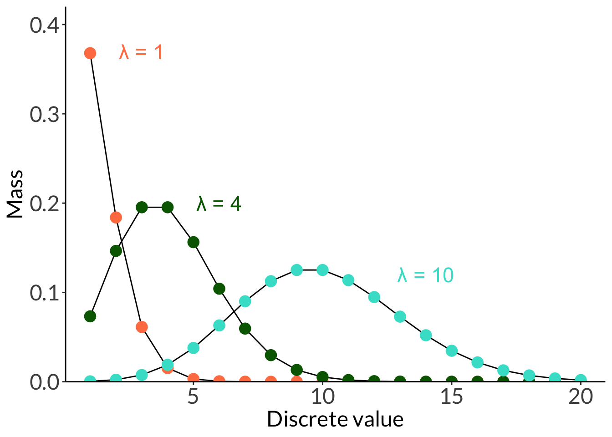

# number of arms arms <-seq(from =40, to =100, by =1)# diameter: anemones can be up to 8 cm longset.seed(10)diam <-rnorm(length(arms), mean =seq(from =1, to =5, length =length(arms)), sd =1) # create a data framedf <-cbind(diam, arms) %>%as.data.frame()ggplot(df, aes(x = arms, y = diam)) +geom_point(size =2) +labs(x ="Number of arms", y ="Diameter (cm)")
Code
ggplot(df, aes(x = arms, y = diam)) +geom_point(size =2) +# just using geom smooth for the purposes of visualizationgeom_smooth(method ="lm", se =FALSE, linewidth =2) +labs(x ="Number of arms", y ="Diameter (cm)") +theme_bw() +theme(panel.grid =element_blank(),axis.text =element_text(size =18),axis.title =element_text(size =18),text =element_text(family ="Lato"))
5. histogram example
The Rice rule guidelines for the calculating the number of bins in a histogram:
\[
bins = 2n^{1/3}
\]
where \(n\) is the number of observations. This is an example of a histogram that does follow the rice rule, where the bin number is 8.
Code
ggplot(df, aes(x = diam)) +scale_x_continuous(breaks =seq(from =0, to =8, by =1)) +scale_y_continuous(expand =c(0, 0), limits =c(0, 19), breaks =seq(from =0, to =18, by =3)) +geom_histogram(breaks =seq(from =0, to =8, by =1), color ="#000000", fill ="lightblue") +labs(x ="Anemone diameter (cm)", y ="Count") +theme(panel.grid =element_blank(),axis.text =element_text(size =18),axis.title =element_text(size =18),text =element_text(family ="Lato"))
These histograms do not, and it proves difficult to see the distribution:
Code
ggplot(df, aes(x = diam)) +scale_x_continuous(breaks =seq(from =0, to =8, by =1)) +scale_y_continuous(expand =c(0, 0), limits =c(0, 19), breaks =seq(from =0, to =18, by =3)) +geom_histogram(color ="#000000", fill ="lightblue") +labs(x ="Anemone diameter (cm)", y ="Count") +theme(panel.grid =element_blank(),axis.text =element_text(size =18),axis.title =element_text(size =18),text =element_text(family ="Lato"))
Code
ggplot(df, aes(x = diam)) +scale_x_continuous(breaks =seq(from =0, to =8, by =1)) +scale_y_continuous(expand =c(0, 0)) +geom_histogram(color ="#000000", fill ="lightblue", bins =3) +labs(x ="Anemone diameter (cm)", y ="Count") +theme(panel.grid =element_blank(),axis.text =element_text(size =18),axis.title =element_text(size =18),text =element_text(family ="Lato"))
6. jitter plot and box and whisker plot example
Code
set.seed(1)pretend_lengths <-cbind(juveniles =rnorm(20, mean =2, sd =0.5), females =rnorm(20, mean =8, sd =1), males =rnorm(20, mean =4, sd =1)) %>%as_tibble() %>%pivot_longer(cols =1:3)ggplot(pretend_lengths, aes(x = name, y = value, color = name)) +geom_jitter(width =0.1, alpha =0.8, size =2) +scale_color_manual(values =c("darkgreen", "cornflowerblue", "orange")) +labs(y ="Weight (g)") +theme(axis.title.x =element_blank(),legend.position ="none")
Code
ggplot(pretend_lengths, aes(x = name, y = value, color = name, fill = name)) +geom_boxplot(alpha =0.8) +scale_color_manual(values =c("darkgreen", "cornflowerblue", "orange")) +scale_fill_manual(values =c("darkgreen", "cornflowerblue", "orange")) +labs(y ="Weight (g)") +theme(axis.title.x =element_blank(),legend.position ="none")
What is the probability of selecting a chiton that is less than 6 ft long given a normally distributed population with \(\mu = 12\) g with \(\sigma = 3\) g?
Code
# calculate the z-scorechiton_z <- (6-12)/3# calculate the probability under the curvepnorm(chiton_z, mean =0, sd =1)
[1] 0.02275013
12. 68-95-99.7 rule
In a normal distribution, 68% of values lie within 1 standard deviation of the mean, 95% within 2 standard deviations, and 99.7% within 3 standard deviations.
ggplot(data.frame(x =-10:10), aes(x)) +stat_function(geom ="line", n =1000, fun = dt, args =list(df =1), linewidth =1, color ="#856F33") +annotate("text", x =3.5, y =0.3, label ="\U03BD = 1", color ="#856F33", size =6) +stat_function(geom ="line", n =1000, fun = dt, args =list(df =3), linewidth =1, color ="#E6821C") +annotate("text", x =3.5, y =0.35, label ="\U03BD = 3", color ="#E6821C", size =6) +stat_function(geom ="line", n =1000, fun = dt, args =list(df =5), linewidth =1, color ="#56E9E7") +annotate("text", x =3.5, y =0.37, label ="\U03BD = 5", color ="#56E9E7", size =6) +stat_function(geom ="line", n =1000, fun = dt, args =list(df =100), linewidth =1, color ="#04B37F") +annotate("text", x =3.5, y =0.4, label ="\U03BD = 100", color ="#04B37F", size =6) +scale_y_continuous(expand =c(0, 0), limits =c(0, 0.42)) +labs(x ="Continuous value", y ="Density") +theme_bw() +theme(panel.grid =element_blank(),axis.text =element_text(size =18),axis.title =element_text(size =18),text =element_text(family ="Lato"))
14. Uniform distribution
Code
ggplot(data.frame(x =0:10), aes(x)) +stat_function(geom ="line", n =1000, fun = dunif, args =list(min =2, max =8), linewidth =1, color ="firebrick4") +annotate("text", x =2, y =0.172, label ="a = 2", color ="firebrick4", size =6) +annotate("text", x =8, y =0.172, label ="b = 8", color ="firebrick4", size =6) +scale_x_continuous(breaks =seq(0, 10, 2)) +scale_y_continuous(expand =c(0, 0), limits =c(-0.001, 0.18)) +labs(x ="Continuous value", y ="Density") +theme_bw() +theme(panel.grid =element_blank(),axis.text =element_text(size =18),axis.title =element_text(size =18),text =element_text(family ="Lato"))
14. Binomial distribution
Code
ggplot(data.frame(x =1:20), aes(x)) +stat_function(geom ="line", n =20, fun = dbinom, args =list(size =20, p =0.1), color ="black") +stat_function(geom ="point", n =20, fun = dbinom, args =list(size =20, p =0.1), color ="#6D9929", size =3) +annotate("text", x =5.5, y =0.29, label ="n = 20, p = 0.1", color ="#6D9929", size =6) +stat_function(geom ="line", n =20, fun = dbinom, args =list(size =20, p =0.4), color ="black") +stat_function(geom ="point", n =20, fun = dbinom, args =list(size =20, p =0.4), color ="#4A76E5", size =3) +annotate("text", x =8, y =0.2, label ="n = 20, p = 0.4", color ="#4A76E5", size =6) +stat_function(geom ="line", n =20, fun = dbinom, args =list(size =20, p =0.7), color ="black") +stat_function(geom ="point", n =20, fun = dbinom, args =list(size =20, p =0.7), color ="#E67960", size =3) +annotate("text", x =15, y =0.21, label ="n = 20, p = 0.7", color ="#E67960", size =6) +scale_y_continuous(expand =c(0, 0), limits =c(0, 0.32)) +labs(x ="Number of successes", y ="Mass") +theme_bw() +theme(panel.grid =element_blank(),axis.text =element_text(size =18),axis.title =element_text(size =18),text =element_text(family ="Lato"))
15. Poisson distribution
Code
ggplot(data.frame(x =1:20), aes(x)) +stat_function(geom ="line", n =20, fun = dpois, args =list(lambda =1), color ="black") +stat_function(geom ="point", n =20, fun = dpois, args =list(lambda =1), color ="coral", size =4) +annotate("text", x =3, y =0.37, label ="\U03BB = 1", color ="coral", size =6) +stat_function(geom ="line", n =20, fun = dpois, args =list(lambda =4), color ="black") +stat_function(geom ="point", n =20, fun = dpois, args =list(lambda =4), color ="darkgreen", size =4) +annotate("text", x =6, y =0.2, label ="\U03BB = 4", color ="darkgreen", size =6) +stat_function(geom ="line", n =20, fun = dpois, args =list(lambda =10), color ="black") +stat_function(geom ="point", n =20, fun = dpois, args =list(lambda =10), color ="turquoise", size =4) +annotate("text", x =14, y =0.12, label ="\U03BB = 10", color ="turquoise", size =6) +scale_y_continuous(expand =c(0, 0), limits =c(0, 0.42)) +labs(x ="Discrete value", y ="Mass")

Citation
BibTeX citation:
@online{bui2025,
author = {Bui, An},
title = {Week 1 Figures - {Lectures} 1 and 2},
date = {2025-03-31},
url = {https://spring-2025.envs-193ds.com/lecture/lecture_week-01.html},
langid = {en}
}